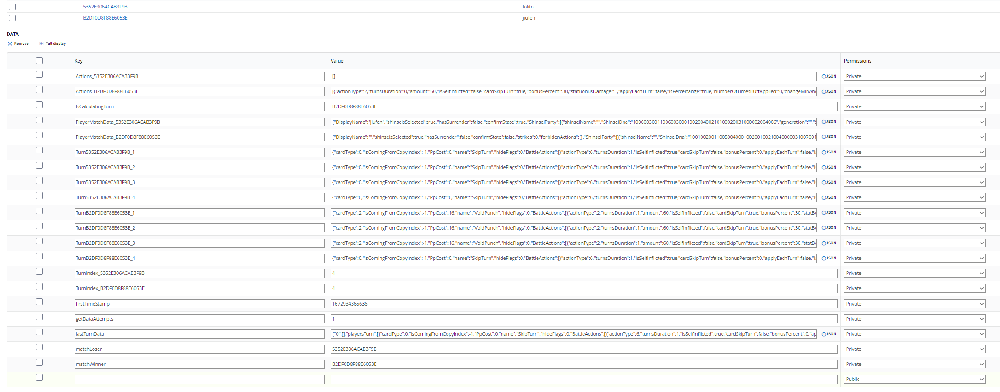

Server
Sacred Tails uses Microsoft Azure and PlayFab systems to function, PlayFab to save account data, battle data, and even manage the game lobby, and Azure to allow players to make requests and interact with others, as it is a serverless system that bills based on usage.

Battle Server
The combat system works in several stages, in the first stage it checks if both players have successfully connected, then both clients verify that they are ready, a countdown starts to choose the Shinsei that will be taken to the combat out of the 6 you can take with you all the time, once chosen the main loop of the combat begins which consists of each player sending their turn, using SendTurn.
Send Turn
Here from the client, the button pressed is indicated, existing from 0 to 3 for the current Shinsei cards, from 4 to 6 to change Shinsei, 7 to skip turn, 8 to surrender. This is done to prevent malicious users from manipulating the RAM and using attacks that are not assigned or breaking the game in any other way.
The client is responsible for calling the Azure Function SendTurn.js, this first makes necessary checks for the combat such as checking if there is already a winner, then it checks if the other player is writing their turn to avoid writing at the same time. After the checks are passed, it checks the number that the player sent, if it is greater than 0 and less than 4 it is an attack, then it checks the combat data and looks for the attack that corresponds to the received position, and adds the turn with that action.
let indexOfCard = req.body.FunctionArgument.Keys.indexCard;
let turnToSend
if (indexOfCard >= 0) {
if (indexOfCard < 4) {
await PlayfabHelpers.GetPlayerMatchData(matchId, playFabId).then(async (playerData) => {
let shinseiCardIndex = playerData.ShinseiParty[playerData.currentShinsei].ShinseiActionsIndex[indexOfCard];
turnToSend = { ...cardDatabase[shinseiCardIndex] };
turnToSend = ParseCardData(turnToSend);
//Check if it is a random action type
turnToSend.BattleActions.forEach(element => {
if (element.actionType == 8 || element.actionType == 11) {
let previousIndex = shinseiCardIndex;
if (element.actionType == 8) {
shinseiCardIndex = generateRandomBetween(4, cardDatabase.length, shinseiCardIndex);
turnToSend = { ...cardDatabase[shinseiCardIndex] };
turnToSend = ParseCardData(turnToSend);
}
turnToSend.isComingFromCopyIndex = previousIndex - 3;
}
});
sendTurnHelper.SendTurnWithCard(turnToSend, matchId, currentTurnKey, newTurnIndex, playFabId, shinseiCardIndex, context);
});
When the players have already sent their corresponding turns, they begin listening to the server to check if the other has already sent their data and the server was able to process the turn, this is done in the Azure Function GetMatchState.
GetMatchState.js And CalculateTurn.js
Get match state is responsible for checking if the data from both players is already uploaded and, in case it is, it calculates them using Calculate Turn.
Calculate turn is the heart of the combat, it is responsible for applying all the modifications to the data to save them in PlayFab. It first verifies that only one of the two players is manipulating the data, then it verifies which of the two Shinsei that are currently in combat has more speed to apply their actions first.
Having decided the order of execution of actions, it verifies a special case that is CopyCat, an attack that allows you to use the same attack as the opponent, then it checks if either of them decided to surrender, and finally, it verifies if the time limit for the combat has not been exceeded. After passing all these filters, the turn is processed using the ExecuteTurn function.
function ExecuteTurn(context, matchId, actionsOrdered, turnsOrdered, players, playfabIds, ppCosts, turnsData, goFirst) {
if (turnsData.currentTerrain != null) {
if (turnsData.currentTerrain.turnsLeft > 0)
terrainsController.ExecuteTerrain(matchId, turnsData.currentTerrain, players[0], players[1]);
if (turnsData.currentTerrain.turnsLeft <= 0)
terrainsController.EndTerrain(matchId, turnsData.currentTerrain.type, players[0], players[1]);
}
let playerIndex = 0;
let otherIndex = 1;
let previousCurrentShinsei = players[otherIndex].currentShinsei;
CalculateAlteredStates(players, actionsOrdered, playerIndex, otherIndex);
let gameEnded = actionsController.CalculateActions(context, matchId, actionsOrdered, turnsOrdered, players, playfabIds, playerIndex, otherIndex, ppCosts, turnsData);
if (gameEnded)
return true;
if (previousCurrentShinsei == players[otherIndex].currentShinsei) {
CalculateAlteredStates(players, actionsOrdered, otherIndex, playerIndex);
gameEnded = actionsController.CalculateActions(context, matchId, actionsOrdered, turnsOrdered, players, playfabIds, otherIndex, playerIndex, ppCosts, turnsData);
if (gameEnded)
return true;
}
else
actionsOrdered[otherIndex] = [];
RegenerateEnergy(actionsOrdered, players, 0);
RegenerateEnergy(actionsOrdered, players, 1);
}
In execute turn, first, the altered states are calculated. These can be Burned, Rooted, Bleeding or Reflecting and their effects are applied. Finally, the effects of the card chosen by the player are applied and the energy of the Shinsei is regenerated at the end of the process. If it turns out that a Shinsei died in the process, it is changed to the next one, or simply if there are no more available, the next time GetMatchState is called, the end of the game will be calculated.
Battle Actions
Each action within the game is represented by a class that is responsible for knowing how to process itself. In the current game, the following actions exist:
- Block
- BuffDebuff
- ChangeShinsei
- CopyCat
- Damage
- Heal
- ReflectDamage
- SkipTurn
- StatSwap
- EndGame
Block
Block allows the Shinsei to evade the damage from the next attack of its opponent. Some cards bring this action as a secondary effect.
function BlockActionType(moveData, userData, otherData) {
//check who gets the movement block
//write the ban movements into the players data
let targetPlayerData = moveData.isSelfInflicted ? userData : otherData;
if (targetPlayerData.forbidenActions == null)
targetPlayerData.forbidenActions = [];
if (!(moveData.amount in targetPlayerData.forbidenActions)) {
targetPlayerData.forbidenActions[moveData.amount]=moveData.turnsDuration
}
}
Buff and Debuff
Buffs increase the statistics of a Shinsei, whether its attack, defense, vigor, stamina or damage, debuffs are the opposite by decreasing the stats.
function ExecuteBuffDebuff(buffDebuffData, userData, otherData) {
if (buffDebuffData.applyEachTurn || (!buffDebuffData.applyEachTurn && buffDebuffData.turnsPassed == 0)) {
let targetPlayerData = buffDebuffData.isSelfInflicted ? userData : otherData;
let attackEvaded = buffDebuffData.evadeRoll < battleStatisticsCalculator.ApplyEvationCritics(targetPlayerData.ShinseiParty[targetPlayerData.currentShinsei].evadeChance);
if (!attackEvaded) {
let buffAmount = buffDebuffData.amount;
if (!buffDebuffData.isBuff)
buffAmount *= -1;
let stat = GetStat(buffDebuffData.statToModify);
let statValue = targetPlayerData.ShinseiParty[targetPlayerData.currentShinsei].ShinseiOriginalStats[stat];
if (buffDebuffData.isPercertange) {
let percentageBase = buffAmount / 100;
let percentage = 1 + percentageBase;
if (buffAmount > 0) {
targetPlayerData.ShinseiParty[targetPlayerData.currentShinsei].ShinseiOriginalStats[stat] = statValue * percentage;
buffDebuffData.numberOfTimesBuffApplied++;
}
else if (buffAmount < 0) {
targetPlayerData.ShinseiParty[targetPlayerData.currentShinsei].ShinseiOriginalStats[stat] = statValue * percentage;
buffDebuffData.numberOfTimesBuffApplied++;
}
}
else {
let finalAmount = targetPlayerData.ShinseiParty[targetPlayerData.currentShinsei].ShinseiOriginalStats[stat] + buffAmount;
if (finalAmount < 300 && finalAmount > 0) {
targetPlayerData.ShinseiParty[targetPlayerData.currentShinsei].ShinseiOriginalStats[stat] = finalAmount;
buffDebuffData.numberOfTimesBuffApplied++;
}
}
SetNormalizedStats(targetPlayerData);
}
else {
if (buffDebuffData.evadedTurns == null)
buffDebuffData.evadedTurns = 1;
else
buffDebuffData.evadedTurns++;
}
}
}
Change Shinsei
This defines the action of changing the current Shinsei.
function ExecuteChangeShinsei(changeShinseiData, userData, otherData, actionsOrdered,userIndexes) {
let targetPlayerData = changeShinseiData.isSelfInflicted ? userData : otherData;
let targetIndex = changeShinseiData.isSelfInflicted ? userIndexes[0] : userIndexes[1];
targetPlayerData.currentShinsei = changeShinseiData.amount >= targetPlayerData.ShinseiParty.length ? targetPlayerData.currentShinsei : changeShinseiData.amount
actionsOrdered[targetIndex] = [];
}
Copy Cat
Copy Cat is a special case where the opponent's ability is used.
function ExecuteCopyCat(turnsOrdered, actionsOrdered, userIndex, otherIndex) {
//Check if its copycat and add actions to the players action list
for (var index of reverseKeys(actionsOrdered[userIndex])) {
let action = actionsOrdered[userIndex][index];
if (action.actionType == 11) {
let previousIndex = turnsOrdered[userIndex].indexCard;
actionsOrdered[userIndex].splice(index, 1);
turnsOrdered[userIndex] = { ...turnsOrdered[otherIndex] };
turnsOrdered[userIndex].BattleActions.forEach(action => {
actionsOrdered[userIndex].push({ ...action });
});
turnsOrdered[userIndex].isComingFromCopyIndex = previousIndex - 3;
}
}
}
Damage
This is the simplest type of action because it only processes the damage with the current Shinsei's stats and applies it.
function ExecuteDamage(damageData, userData, otherData) {
let targetPlayerData = damageData.isSelfInflicted ? userData : otherData;
if (targetPlayerData.ShinseiParty[targetPlayerData.currentShinsei].reflectDamageLeft != null && targetPlayerData.ShinseiParty[targetPlayerData.currentShinsei].reflectDamageLeft > 1) {
targetPlayerData = damageData.isSelfInflicted ? otherData : userData;
targetPlayerData.ShinseiParty[targetPlayerData.currentShinsei].reflectDamageLeft--;
}
let criticsMultiplier = 1;
//Apply critic
let criticMultiplier = 1;
if (damageData.criticsPercentChange > 0 && damageData.criticsRoll < battleStatisticsCalculator.ApplyEvationCritics(damageData.criticsPercentChange))
criticMultiplier = 1.5;
// Apply cardType
//Shinsei type weakness and strengths
let actionType = damageData.actionElementType;
let targetShinseiType = targetPlayerData.ShinseiParty[targetPlayerData.currentShinsei].shinseiType;
let ownerShinseiType = userData.ShinseiParty[userData.currentShinsei].shinseiType;
let shinseiTypeDifferenceMultiplier = CompareTypesAndGetDamage(actionType, targetShinseiType);
let stab = actionType == ownerShinseiType ? 2 : 1;
// Apply evade
let attackEvaded = damageData.evadeRoll < battleStatisticsCalculator.ApplyEvationCritics(targetPlayerData.ShinseiParty[targetPlayerData.currentShinsei].evadeChance);
//Attack
if (!attackEvaded) {
let bonusDamage = battleStatisticsCalculator.GetBonusStat(userData.ShinseiParty[userData.currentShinsei], getObjKey(constants.ShinseiStatsEnum, damageData.statBonusDamage), damageData.bonusPercent);
let shinseiDamageStat = userData.ShinseiParty[userData.currentShinsei].ShinseiNormalizedStats.Attack;
let rawDamage = battleStatisticsCalculator.GetFinalDamage(damageData.amount + bonusDamage, shinseiDamageStat, stab, shinseiTypeDifferenceMultiplier, criticsMultiplier);
let finalDamage = battleStatisticsCalculator.GetDamageReceiveByTarget(targetPlayerData.ShinseiParty[targetPlayerData.currentShinsei].ShinseiNormalizedStats.Defence, rawDamage);
let finalDamageInt = Math.floor(finalDamage);
targetPlayerData.ShinseiParty[targetPlayerData.currentShinsei].shinseiHealth = Math.max(targetPlayerData.ShinseiParty[targetPlayerData.currentShinsei].shinseiHealth - finalDamageInt, 0);
}
}
Heal
Heal is the same process as above but increasing the health stat.
function ExecuteHeal(healData, userData, otherData) {
let targetPlayerData = healData.isSelfInflicted ? userData : otherData;
let bonusHeal = battleStatisticsCalculator.GetBonusStat(targetPlayerData.ShinseiParty[targetPlayerData.currentShinsei], getObjKey(constants.ShinseiStatsEnum, healData.statBonusDamage), healData.bonusPercent);
let currentHealth = targetPlayerData.ShinseiParty[targetPlayerData.currentShinsei].shinseiHealth;
let maxHealth = targetPlayerData.ShinseiParty[targetPlayerData.currentShinsei].ShinseiOriginalStats.Health;
targetPlayerData.ShinseiParty[targetPlayerData.currentShinsei].shinseiHealth = Math.min(maxHealth, Math.floor((currentHealth + healData.amount + bonusHeal)));
}
Reflect Damage
Reflect Damage is a special status in which the damage that would be received is applied to the opponent.
function ReflectDamage(reflectDamageData, userData, otherData) {
//check who gets the movement block
//write the ban movements into the players data
let targetPlayerData = reflectDamageData.isSelfInflicted ? userData : otherData;
if (targetPlayerData.ShinseiParty[targetPlayerData.currentShinsei].reflectDamageLeft == null || targetPlayerData.ShinseiParty[targetPlayerData.currentShinsei].reflectDamageLeft <= 0)
targetPlayerData.ShinseiParty[targetPlayerData.currentShinsei].reflectDamageLeft = 1;
else
targetPlayerData.ShinseiParty[targetPlayerData.currentShinsei].reflectDamageLeft += 1;
}
Skip Turn
This function is used both to wait for energy to recover and to apply effects such as Rooted, creates an empty turn.
StatSwap
Swaps the value of two stats temporarily, for example, a Shinsei with high defense could convert its defense into damage
EndGameAction
This action is special because it is called when the calculation decides that the game has ended, then it is responsible for delivering the virtual currency prizes, updating data in the tournament status and writing in the respective places who was the winner.
Create Match and Delete Match
These functions serve to create what is known as Share Group in Azure, the fights in sacred tails are Sharegroups where the two contenders are added, it has a key name that identifies it and saves both the turns and the results.
Create Match creates a new match and Delete deletes it.

This is an example of a Share Group of a fight.
Lobby
A large part of the lobby processing is done via server, this is responsible for saving and delivering the positions of all players.
The first step to be part of a lobby is to connect
ConnectToLobby
Connect to lobby first checks that the player who is trying to connect is using the latest version of the game to avoid corrupting data to other players, then it checks if the ID provided is truly a lobby and if it is, it checks if it has space for more players.
When connecting, it checks if the player has ELO among his data, if not, it sets the default ELO value and informs the player that he was able to connect correctly.
Tournaments
Sacred tails allows creating Knock Out tournaments between players in the form of elimination.
Create Tournament
This function creates a sharegroup and initializes the necessary values to add a user to this tournament.
module.exports = function (context, req) {
if (!req.body) {
context.res = { status: 200, body: { success: false, code: 20, message: 'Please send valid data', data: null } };
return context.done();
}
playfabController.Init();
let tournamentId = req.body.FunctionArgument.Keys.tournamentId;
let request = {
SharedGroupId: tournamentId
}
PlayFabServer.CreateSharedGroup(request, (error, result) => {
if (error !== null) {
context.res = { status: 200, body: { success: false, code: 3, message: 'Could not create tournament', data: null } };
return context.done();
}
request["Data"] = {
initTimeStage_1: req.body.FunctionArgument.Keys.initTime,
tournamentName: req.body.FunctionArgument.Keys.tournamentName,
maxPlayer: req.body.FunctionArgument.Keys.maxPlayer,
tournamentDuration: req.body.FunctionArgument.Keys.tournamentDuration,
currentStage: 0
};
PlayFabServer.UpdateSharedGroupData(request, (error, result) => {
if (error !== null) {
context.res = { status: 200, body: { success: false, code: 2, message: 'Could not create tournament', data: null } };
context.done();
}
else {
let displayTournamentData = { ...request.Data }
delete displayTournamentData.numberOfBrackets;
delete displayTournamentData.tournamentDuration;
delete displayTournamentData.currentStage;
let requestData = {};
requestData[tournamentId] = JSON.stringify(displayTournamentData);
let displayRequest = { PlayFabId: constants.availableTournamentPID, Data: requestData }
PlayFabServer.UpdateUserData(
displayRequest,
(error, result) => {
if (error !== null)
context.res = { status: 200, body: { success: false, code: 1, message: 'Could not set display data tournament', data: null } };
else
context.res = { status: 200, body: { success: true, code: 0, message: 'Tournament Created', data: displayRequest } };
context.done();
}
);
}
});
});
}
Get Tournament List
With this function, users from the game can see which tournaments are active at the moment and request to join them by code. When a tournament is created, a fake user is added that saves the existing tournaments in its keys, this function downloads all these keys, filters them by hour and displays them.
module.exports = function (context, req) {
if (!req.body) {
context.res = { status: 200, body: { success: false, code: 20, message: 'Please send valid data', data: null } };
return context.done();
}
playfabController.Init();
let getTounrnamentDataRequest = {
PlayFabId: "7F1965D480D991B5",
}
try {
PlayFabServer.GetUserData(getTounrnamentDataRequest, (error, result) => {
if(error != null){
//:C
}
else{
let data = [];
Object.keys(result.data.Data).forEach(key => {
let tournamentData = JSON.parse(result.data.Data[key].Value);
tournamentData.tournamentId = key;
data.push(tournamentData);
})
context.res = { status: 200, body: { success: true, code: 0, message: "here is all tournaments", data} };
context.done();
}
});
}
catch (err) {
context.res = { status: 200, body: { success: false, code: 404, message: err.message, data: err.data } };
context.done();
}
}
Check Bracket Data
Like the lobby, tournaments have their own function to check the state of the tournament at certain times and that function is this.
The first thing it does is check if this function was called by both players, the player can call it using the ready button within the game, when the function is called it verifies the maximum time limit to notify that it is ready and if one of the two has not called the function, the one who did wins, and if neither of them called it, the game decides that there will be a default winner in the next bracket.
The first time a request arrives where both are marked as ready, the lobby is notified that a fight is ready and what the match ID of that fight is for the tournament, then both players enter a fight.
After everything is processed like in a normal game, the game notifies that there was a winner and the winning player stays calling the function GetCurrentBracketsData
Get Current Brackets Data
In this function, the server verifies that all games have a winner in order to proceed to update the state of the tournament and create the next branches.
Varius Server Side Functions
ReportBug
This function allows users to send a bug report through a small form and a button, which includes a screenshot of the user.
module.exports = function (context, req) {
if (!req.body) {
context.res = { status: 200, body: { success: false, code: 3, message: 'Please send valid data', data: null } };
context.done();
return;
}
playfabController.Init();
let playFabId = req.body.CallerEntityProfile.Lineage.MasterPlayerAccountId;
let picture = req.body.FunctionArgument.Keys.picture;
let message = req.body.FunctionArgument.Keys.message;
let matchId = req.body.FunctionArgument.Keys.matchId;
let date = new Date();
try {
UploadReport(matchId + ":" + date.getTime() + ":" + playFabId, picture, message, context)
}
catch (err) {
CatchError(context, { code: 404, message: "Unexpected error on bug report", data: null });
}
}
//### Helpers ###
function CatchError(context, err) {
context.res = { status: 200, body: { success: false, code: err.code, message: err.message, data: err.data } };
context.done();
}
function UploadReport(code, picture, message, context) {
let debugData = {};
debugData[code] = JSON.stringify({ picture: picture, message: message, timestamp: new Date() });
let reportBugRequest = {
SharedGroupId: "Bugs",
Data: debugData
}
PlayFabServer.UpdateSharedGroupData(reportBugRequest, (error, result) => {
if (error == null) {
context.res = { status: 200, body: { success: true, code: 0, message: "Bug report succesfully", data: null } };
context.done();
}
else {
CatchError(error);
}
});
}
GetRewards Rank System
This function serves the data stored in a json that configures the rewards.